{{appName}}
Key Points - Harness transformative power of mobility
- Establish a direction and start small
- Think of mobile as a catalyst—it gives you the opportunity to completely reimagine your customer’s experience
- Look at your customers journey holistically and identify moments where you can swoop in
and meet their need or solve a problem right from their mobile device
- Purchasing decision while they’re at a store
- Timely instructional video upon their first use of your product
- What are the stages of your customer’s life cycle, and how can mobile intersect with each of those stages?
-
But it’s not enough to think about your customer’s experience. Consider your entire organization.
- How do you connect to your employees?
- How do you connect to your partners? What’s their journey?
- You may need to deliver multiple mobile solutions to meet these goals
Start with Apps for Employees
- Roll out an App like Salesforce App to Employees for CRM functions
- Build few Employee-specific Apps (like Idea-Share, Log-Ticket...)
- After mobility has proven to be beneficial, develop an App for your customers - like loyalty rewards app
Possible Obstacles to Mobile Transformation
- No clear direction or strategy
- Lack of analytics and research to inform mobile development
- Not enough executive support or funding
- Scarcity of mobile expertise and resources
- Legacy systems and data silos that prevent integration
- Concerns about security and compliance
- Indecision about mobile technologies, tools, and platforms
Mobile Strategy
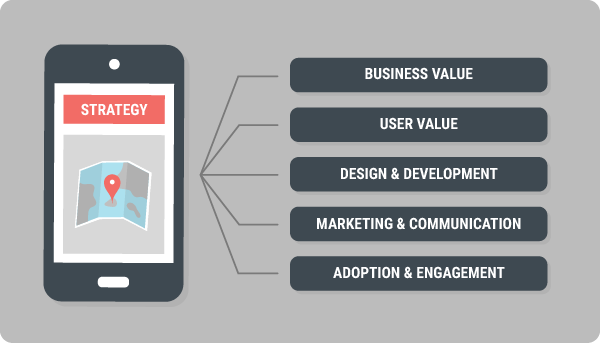
- Must be aligned with your organization’s business objectives
- Meet the goals of your users so you can design the right mobile solution
- Various tools, technologies, resources, and processes necessary for the job
- Market your new offering to users. Onboarding and training the users
- Measure adoption and drive engagement
Mobile Usage Analytics
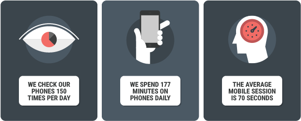
- The interactions are micro-moments
- Point in time when someone uses their phone in context to take a quick action or consume information
- On average: these bursts of focused activity last about a minute
Micro Moments
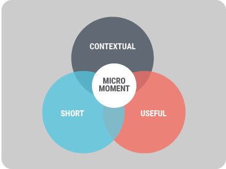
- Powerful: because they encourage a certain kind of interaction, one that is short, contextual, and useful
- Short: The interaction is brief, simple, and focused
- Contextual: The interaction happens in real time
- Useful: The interaction is smart and relevant
- Examples:
- Customer: Checks in at your store to unlock discounts or rewards
- Service rep (employee): Looks up the next service call and gets directions to the location
- Ref: Your Guide to Winning the Shift to Mobile - Google
Executive Team Support
- Mobile must become part of your Company's DNA
- Change starts at the top
- Executive Team must recognize the value of mobile, formulate a vision, and pave the way for success
- Without Executive Team support:
- Not enough budget
- Trouble in securing the right resources
- Not possible to collaborate across departments or channels
Mobile Strategy - steering group - keep it small!
- A small team of key stakeholders who are responsible for business outcomes and understand the holistic customer and employee experience
- Executives serving customers - Chief marketing officer
- Executives serving employees - Chief operations officer
- IT leadership for technology resources and infrastructure - Chief information office
Evaluate Your Mobile Maturity
- Assess your organization’s mobile readiness
- Prepare set of questions to ask to access your organization’s mobile Maturity
- Ref: Mobile Mind Shift Maturity Framework report - Forrester
- When you’re done reading the report, pass it along to key decision makers or stakeholders at your company
Mobile Strategy - Business Value
Mobile Strategy - Goals and Business Objectives
- Dont rely solely on engagement metrics—like user logins or app downloads—to measure mobile succes
- Focus on Overall-Value and ROI
- Look for areas where mobility have the greatest impact
- Example Business Objectives
- Acquire new customers - increase new leads from existing customers
- Retaining existing customers - increase customer satisfaction - Revenue gain
- Improve service response times - Cost reduction
- Reduce onboarding time for sales reps - Productivity gain
KPI - Measure the results of your mobile initiatives
- Gauge the effectiveness of your mobile strategy to gain support for future mobile projects
- For business objective - Customer retention :
- % increase in revenue retention
- % increase in the number of retained customers
- % decrease in the number of callbacks
- For business objective - deflecting customers to a self-service mobile app:
- Total number of cases closed through the mobile app versus the call center
Mobile Strategy - User Value
User Value - Foucus on Micro-moments
- Deliver solutions to users that are immediate, useful, and contextual
- Key is looking at : Customer Journey :
- How customers discover your products and services?
- What makes them decide to buy, and what’s the purchasing process like?
- What factors influence their decision to stay with your company? To buy again?
- How do they seek help?
- How do they engage with your brand?
- At what points in the journey the customers most likely to reach for thier mobile phone, and what are they trying to accomplish?
Multiple Devices - Multi-Screen World
- Phone, tablet, computer, and television
- 90% of consumers jump from one screen to another during the day
- 90% of users move between devices to accomplish a single goal
- The device the users choose to use at a particular time is driven by the context
Right Research
- The device the users choose to use at a particular time in the journey is driven by the context
- Quantitative Research: Surveys and web analytics helps to get these metrics - fails to deliver your user’s needs and intentions in specific contexts
- Ethnographic Studies: interviews and observation - discovering details about users goals and behaviors in specific contexts
- Customer Journey: the steps the customers take when engaging with your company- get a holistic view of their life cycle
Sample - Customer Journey
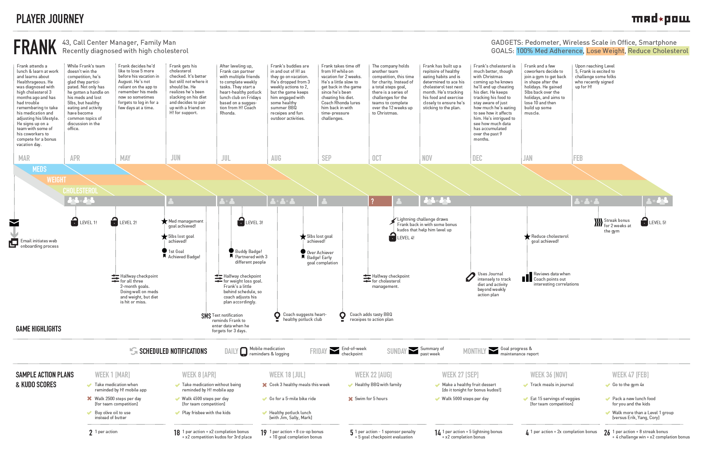
Finding Mobile Opportunities - with results contextual research

- User’s goals
- Mobile fitting into the user life cycle
- Areas where user’s mobile needs overlap with your organization’s mobile objectives
Finding Mobile Opportunities - Examples
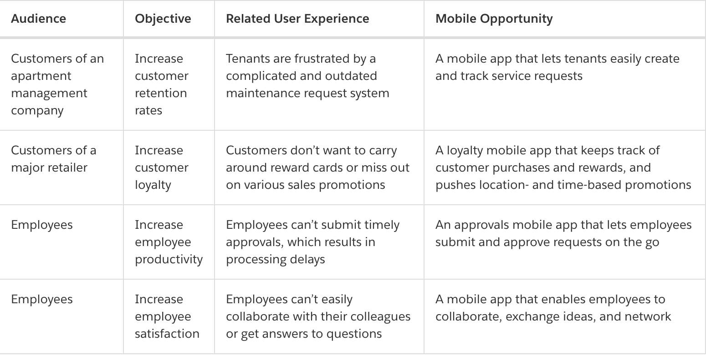
Prioritize - Mobile Ideas - Start small & selective
- Select which mobile solution to deliver, consider these factors:
- Business value
- Your organization’s mobile maturity
- Market opportunity
- Ease of implementation
- Security requirements
- Speed to market
- Availability of resources
- Ease of user adoption
- Global requirements
Design and Development
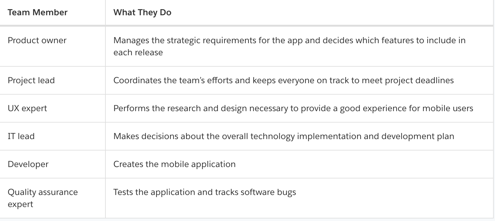
- People, processes, tools, and technologies
- Assemble a Cross-Functional Team
Best Practices for Mobile Design
- Invest in mobile design and bake it into the development process
- Research - features that users actually need - use cases
- Target users and tasks they like to accomplish
- Most often performed tasks
- Assumptions about users and how they’ll interact with the app
- Design:
- With help of designer team member with a solid understanding of mobile design principles and guidelines
- Usability Testing
- Validate the assumptions made via through testing
- Provide feedback to the design team to tweak the design of the app, if required
- Test a prototype before you spend resources on building a finished app
- Research - features that users actually need - use cases
Development Plan - Evolving process
- Infrastructure
- Building APIs and Web Services
- Integration with your back-end systems
- Mobile expertise
- In-house Mobile Developers
- Budget for hiring external consultants, vendors, or agencies
- Technology option
- Mobile operating systems to support
- iOS
- Android
- HTML5
- Mobile application development platform
- XCode
- Android Studio
- Mobile operating systems to support
- Security
- Minimum standards for data security
- Industry specific regulations
- How to secure your employees’ devices
- App Maintenance
- Providing release app updates
- Release management
Development Plan - Agile
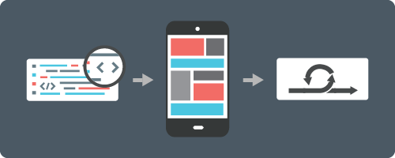
- Short development cycles
- Frequent software releases
- Incremental and continuous improvement
- Agile benefits
- Rapidly changing user needs, behaviors, and expectations
- Constantly evolving business objectives
- Fast-paced nature of the mobile market
- Frequent mobile OS updates and upgrades
- Ability to confidently experiment with new tools and frameworks
- Short life span of mobile apps
- Opportunity to apply lessons learned from previous releases
Partnering with Salesforce
June 2016 Magic Quadrant for Mobile App Development Platform - Gartner
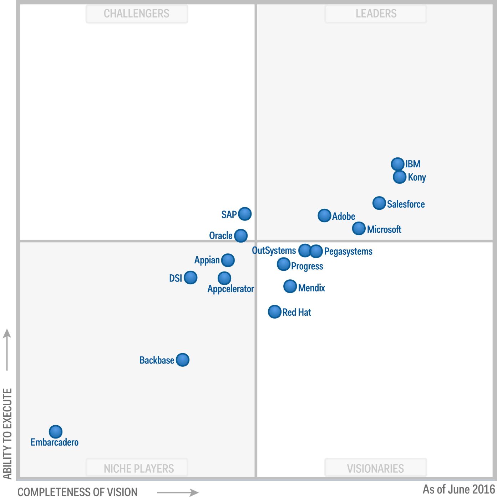- Tap into your existing customer data inside Salesforce
- Instantly make your Salesforce experience mobile with the Salesforce app
- Get consistent app upgrades to the Salesforce mobile app
- Build on top of an enterprise secure mobile platform
- Combine the power of declarative and programmatic tools (clicks and code)
- Reduce custom coding by using existing Lightning components
- Achieve complete developer freedom through native, hybrid, and react native SDKs
- Integrate seamlessly with Mobile Device Management solutions
- Partner with system integrators from the Salesforce ecosystem
- Ramp up employees to become mobile Trailblazers with Trailhead content
Mobile components from the Salesforce Platform
- Salesforce mobile app - core of mobile app portfolio
- Out-of-the-box: provides employees with instant access to your company’s CRM data and your customizations
- Included for free with every Salesforce license
- Extension apps developed by Salesforce or Salesforce partners - Evernote, Docusign, and more
- Supplement and integrate with the Salesforce mobile app
- Target specialized roles and functions within your company (like marketers or admins)
Salesfor Apps - 1
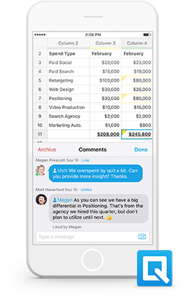
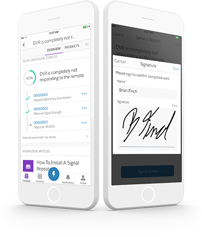
- Quip
- Field Service Lightning (iOS only)
- Analytics
- Salesforce Marketing Cloud (iOS only)
- Social Studio
- Desk.com
- SalesforceA for Admins
- Salesforce Authenticator
Salesfor Apps - 2
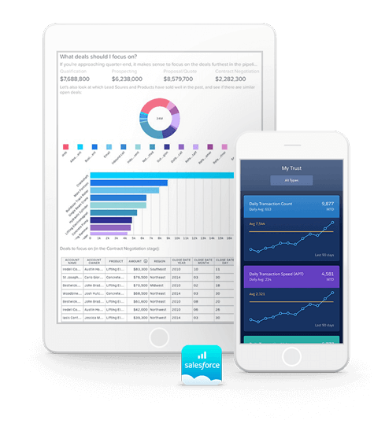
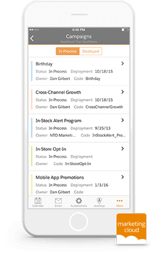
- Quip
- Field Service Lightning (iOS only)
- Analytics
- Salesforce Marketing Cloud (iOS only)
- Social Studio
- Desk.com
- SalesforceA for Admins
- Salesforce Authenticator
Salesfor Apps - 3

- Quip
- Field Service Lightning (iOS only)
- Analytics
- Salesforce Marketing Cloud (iOS only)
- Social Studio
- Desk.com
- SalesforceA for Admins
- Salesforce Authenticator
Salesfor Apps - 4
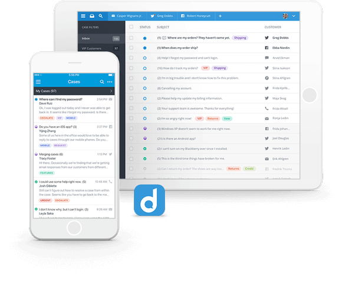
- Quip
- Field Service Lightning (iOS only)
- Analytics
- Salesforce Marketing Cloud (iOS only)
- Social Studio
- Desk.com
- SalesforceA for Admins
- Salesforce Authenticator
Salesfor Apps - 5
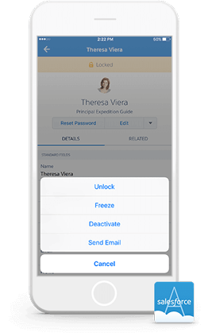
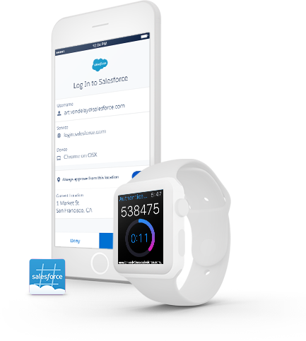
- Quip
- Field Service Lightning (iOS only)
- Analytics
- Salesforce Marketing Cloud (iOS only)
- Social Studio
- Desk.com
- SalesforceA for Admins
- Salesforce Authenticator
Mobile SDK - Build Custom Mobile Apps
- SDK enables your organization to build new mobile apps with customized user experiences for employees, partners, and customers
Get the Word Out - marketing and communication

- Create a marketing plan for the launch of the app - covering activies: before, during, and after the release
- Market Your Customer Apps
- Market Your Employee Apps
Adaption
-

- Prevent users from abandoning the app
- Drive Adoption and Engagement
- 4 Stages of Ensuring Happy Users

Measure Success

- Use analytics to monitor the effectiveness of your mobile initiatives to:
- Prove mobile ROI and help build support for future mobile projects
- Allow your steering group to evolve your overall mobile strategy
- Inform and guide the efforts of your development and marketing teams
- Business Metrics
- Engagement Metrics
- Gather
Business Metrics
- Baseline measurements before launch
- Target metrics
- Acutals vs Goals
- How to improve the results?
- Missing any
necessary for higher adoption? - Adusting mobile strategy needed?
Engagement Metrics - measuring user engagement
- The number of daily active users (DAU)
- The number of monthly active users (MAU)
- Retention rates (daily, weekly, monthly, and quarterly)
- Which features are the most and least popular
- Where in their life cycle users tend to drop off and stop using the app
Gather Feedback

- Surveys, polls, and focus groups
- Interviews and usability testing
- Online user forums and communities
- Social media (or for internal apps, your enterprise collaboration tool)
- In-app feedback forms
- User ratings and comments in App Store and Google Pl